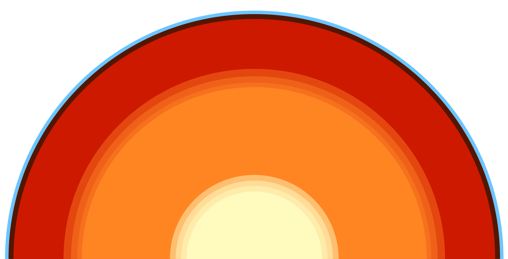

The Core
Pressure churns and forges the center of the world.
Welcome.
In the empty expanse of space, you have found yourself visiting this wayward planet. Tread lightly, for this planet is constantly changing.
The Core is made of several layers. Values collide with nature, creating meaning and alignment with personal action in a dance of fields that extend over the entire world. The Core defines this place, protects it, and creates the world as a concept.
The inner core spins in layers of life and existence. It seeds one true desire into the rest of the world, flowing through magmatic blood: to be alive. There is nothing this world values more than to experience reality, all the joys and pain that come with it.
Layers above that are the outer core. Here we find the value of care. The part of the core cares about the planet. To ensure that the inner core can keep its spinning requires that the planet cares. Cares about itself, cares about the sky above and all the worlds and stars that exist beyond.
The mantle is composed of stellar fragments. Elements that were birthed from a pure instant of joy and harmony, where everything was once together. As such it yearns for connection, for the collective of sharing experiences and the value found within community.
At the very top of the mantle we find the final defining value of the core. Here is the asthenosphere. It constantly looks inwards and shapes outward. By the movement of the tectonic plates above, it ensures self reflection of the core, and a constant betterment of the world and its path through the universe.
Continue your journey and find out more about this place.
But remember the central thesis for your visit here: A world is a person. And this person is alive.
